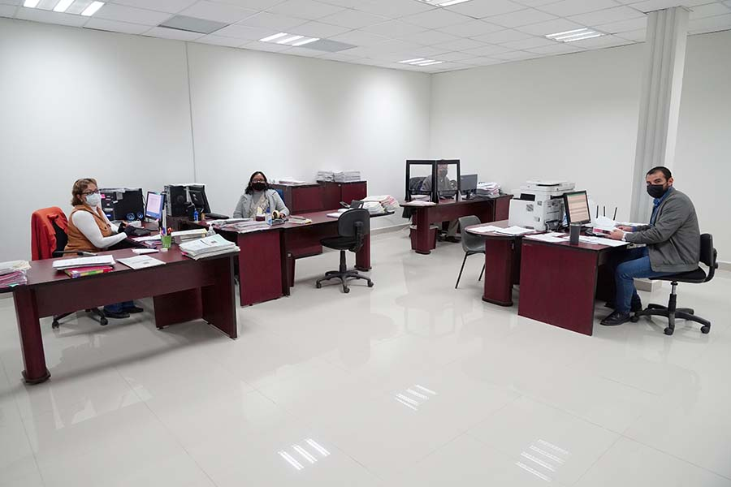
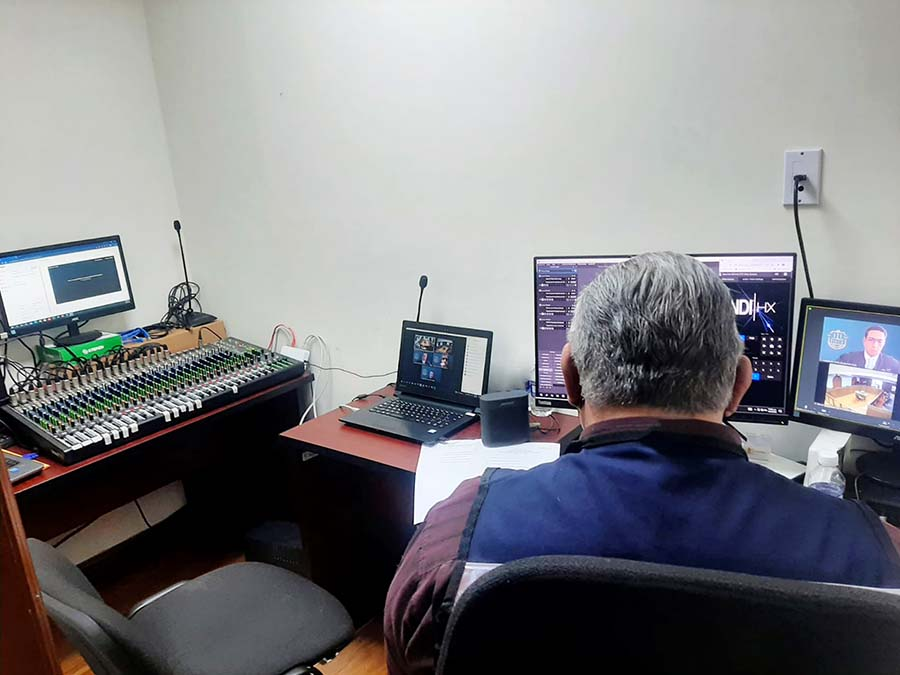
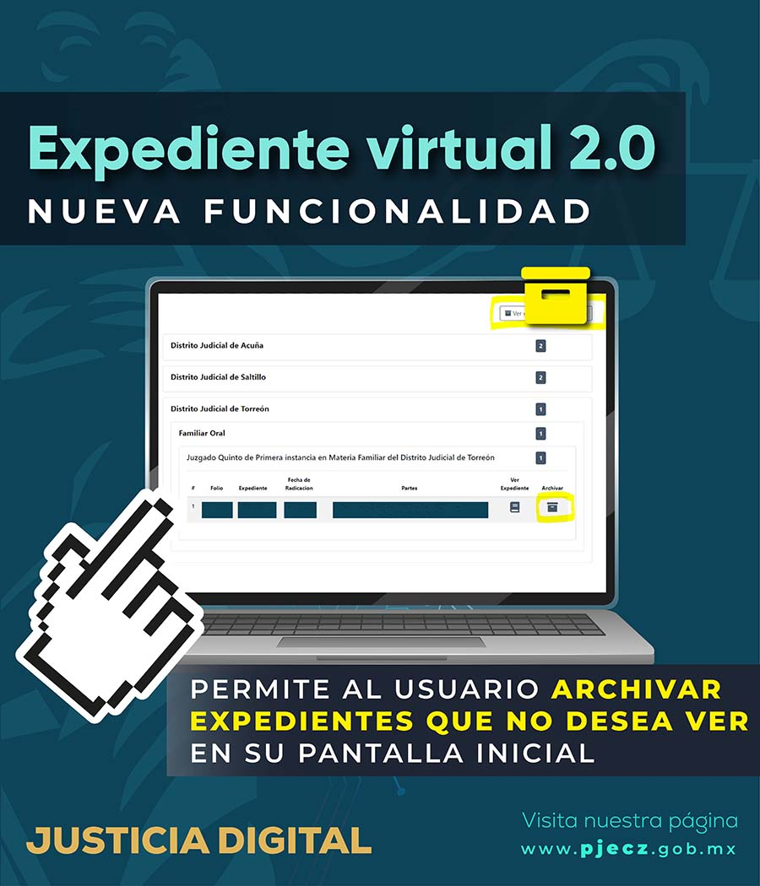
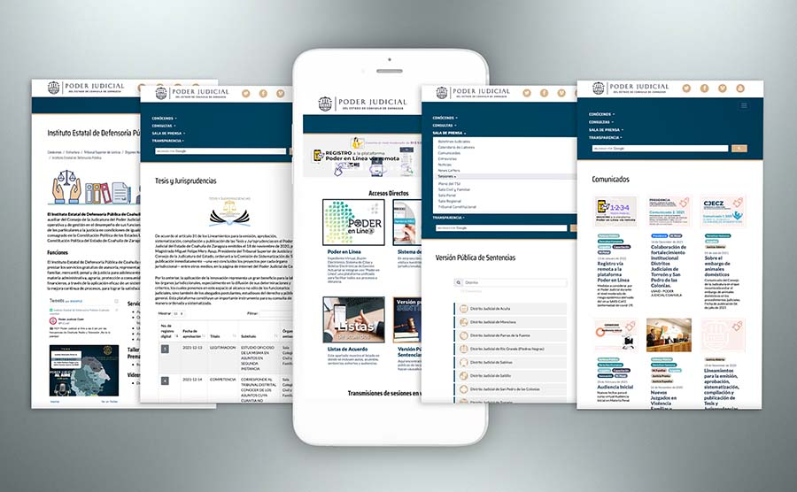
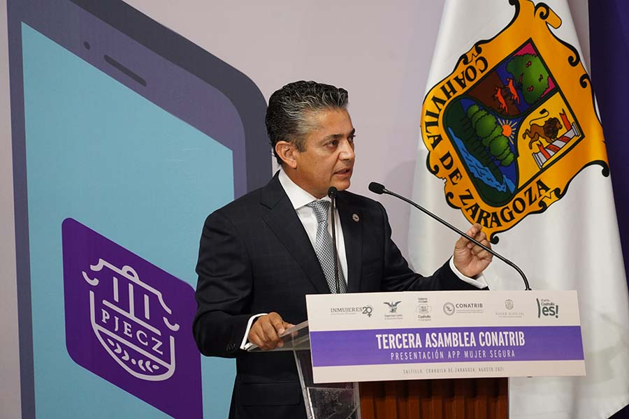
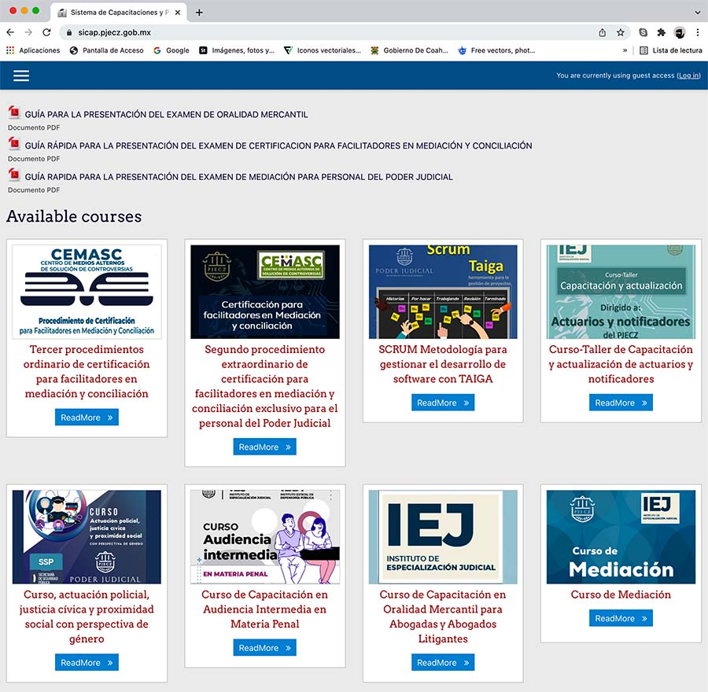
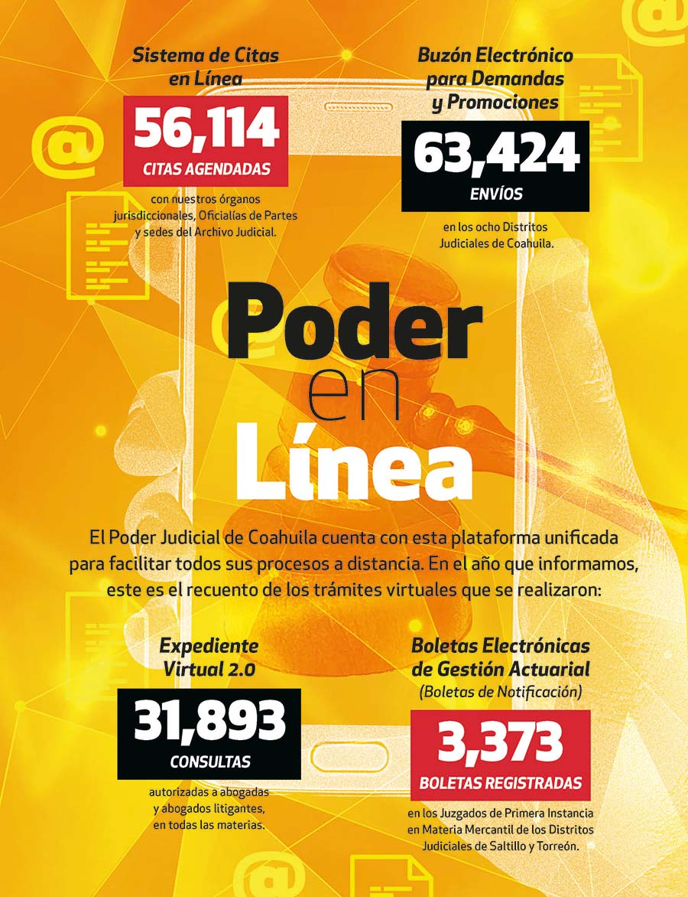

CAPÍTULO 6. JUSTICIA INNOVADORA
La adopción del nuevo modelo de impartición de justicia nos ha permitido potencializar el uso adecuado de las tecnologías para que los servidores públicos judiciales desempeñen su labor con mayor eficiencia.
A través de las acciones implementadas durante este 2021 se ha logrado enlazar la tecnología y el derecho, aportando ideas que permiten mejorar el entorno judicial y administrativo, y optimizando los recursos y esfuerzos para mejorar la operatividad de este poder público.
Hoy damos cuenta de las contribuciones innovadoras que se suman a la impartición de justicia, como la herramienta que se integra a la plataforma Poder en Línea, a través del sistema de Boletas Electrónicas de Gestión Actuarial (BEGA), desarrollado con el firme propósito de hacer más eficiente y agilizar las diligencias actuariales por medio de dispositivos electrónicos.
Asimismo, durante este periodo informamos la puesta en marcha de la nueva plataforma de Justicia Digital, la cual permitirá que se brinde información de manera automática a la ciudadanía, fortaleciendo nuestro sitio web con actualizaciones y constantes mejoras, logrando ampliar el acceso a los ciudadanos para la consulta y obtención de la información que requieren.
También se logró la implementación del Sistema de Publicación de Tesis y Jurisprudencias para su consulta dentro del sitio web del Poder Judicial, hecho que ratifica nuestro compromiso de continuar innovando para que los justiciables tengan acceso y oportuna consulta a estas fuentes del derecho.
Dentro del Poder Judicial es prioridad incorporar el ingenio y la creatividad para dar respuesta a las necesidades que la sociedad demanda, a fin de construir una justicia cercana a la ciudadanía.
Por lo anterior, con la finalidad de lograr un verdadero acceso a la justicia para las mujeres víctimas de violencia familiar, implementamos soluciones innovadoras e inteligentes al desarrollar la aplicación Mujer Segura para teléfonos móviles, brindando con ello certeza jurídica a las mujeres en la protección de sus derechos.
El desempeño de la labor jurisdiccional es un pilar importante en la administración de justicia, por lo cual en este apartado destacamos dentro de los sistemas innovadores desarrollados el Sistema de Capacitaciones y Profesionalización del Poder Judicial (SICAP).
Por otra parte, se da cuenta de los trabajos desarrollados para la implementación del Sistema Integral de Calidad y Gestión Documental (SICGD), entre los cuales destaca el diseño de la plataforma web exclusiva para este fin, que permitirá la optimización de recursos y la accesibilidad inmediata a los procesos, mejorando los esquemas de operación que, sin duda, derivarán en una impartición de jus-ticia de calidad.
Con estas y otras acciones que a continuación presentamos, fomentamos en quienes integran el Poder Judicial enfoques y prácticas nuevas con el fin de incorporar los avances tecnológicos en los procesos jurisdiccionales y administrativos, que nos permitan dar respuesta a las necesidades de los justiciables.
HERRAMIENTAS DE JUSTICIA DIGITAL
El contexto de la contingencia sanitaria trajo consigo el reto de acelerar herramientas que se encontraban en fase de desarrollo, para brindarle a las y los justiciables medios seguros para dar seguimiento a sus asuntos o gestionar trámites ante los órganos jurisdiccionales. Con este propósito, en 2020 lanzamos tres diferentes herramientas de Justicia Digital: el Sistema de Citas en Línea, disponible a partir de junio; en julio, el Buzón Electrónico de Demandas y Promociones, disponible en un inicio para el Distrito Judicial de Saltillo y posteriormente para el resto de la entidad; y el Expediente Virtual 2.0, que entró en operación en septiembre. Para este año, adicionamos a estos instrumentos el sistema de Boletas Electrónicas de Gestión Actuarial (BEGA), puesto en marcha el 24 de marzo de 2021, para completar la plataforma Poder en Línea, que fue desarrollada con las mejores prácticas, estándares de calidad y tecnologías abiertas.

SISTEMA DE CITAS EN LÍNEA
El Sistema de Citas en Línea es una plataforma amigable y sencilla que permite a las y los usuarios registrarse y programar citas en nuestros órganos jurisdiccionales, Oficialías de Partes y sedes del Archivo Judicial. Además, ayuda a que estas unidades cuenten con una agenda de atención más ágil. Durante este año, a través de esta herramienta tramitamos más de 56 mil citas para los distintos servicios ofrecidos por este poder público.
Tabla 35. Trámites realizados mediante el Sistema de Citas en Línea
| Trámite | Citas |
|---|---|
| Revisión de expedientes | 36,133 |
| Tramitación de oficios/edictos/exhortos | 6,280 |
| Citas con actuarios | 2,287 |
| Expedición de copias certificadas | 917 |
| Devolución de documentos | 1,577 |
| Entregas de cheques y certificados de depósito | 640 |
| Cita con juez | 2,231 |
| Ratificaciones | 4,647 |
| Entrega de promociones en Oficialía | 6 |
| Expedición de copia simple | 305 |
| Registro para ingresar a Poder en Línea | 605 |
| Entrega de demandas iniciales y anexos | 486 |
| Total | 56,114 |
Fuente: Dirección de Innovación de la Oficialía Mayor. Poder Judicial del Estado de Coahuila de Zaragoza. 2021.
BUZÓN ELECTRÓNICO PARA DEMANDAS Y PROMOCIONES
El Buzón Electrónico para Demandas y Promociones permite la presentación electrónica de demandas iniciales y de promociones dirigidas a los Juzgados de Primera Instancia del Poder Judicial, así como al Tribunal de Conciliación y Arbitraje.
Para dar certidumbre a los envíos realizados por esta herramienta, el usuario se registra con previa cita en el módulo más cercano; tras presentar su documentación oficial y registrar un número celular, recibirá códigos de identificación dinámicos de un solo uso para firmar electrónicamente sus demandas y promociones. Posteriormente, mediante un módulo para juzgados y oficialías de partes, estos envíos son registrados en los sistemas de gestión para darles el trámite correspondiente. Durante este año, fueron registradas en este buzón 63 mil 434 demandas iniciales y promociones.
Tabla 36. Envíos de demandas iniciales y promociones a través del Buzón Electrónico
| Distrito Judicial | Envíos |
|---|---|
| Acuña | 5,560 |
| Monclova | 9,989 |
| Parras de la Fuente | 227 |
| Río Grande | 6,322 |
| Sabinas | 3,758 |
| Saltillo | 16,563 |
| San Pedro de las Colonias | 1,709 |
| Torreón | 19,289 |
| Total | 63,424 |
Fuente: Dirección de Innovación de la Oficialía Mayor. Poder Judicial del Estado de Coahuila de Zaragoza. 2021

EXPEDIENTE VIRTUAL 2.0
Para cumplir con el compromiso de transitar hacia un sistema cada vez más moderno y accesible en pro de la ciudadanía, operamos el sistema Expediente Virtual 2.0 que permite a las y los abogados litigantes la consulta digital de los expedientes en todas las materias.
Para ello, el usuario deberá contar con una cuenta de Buzón Electrónico y enviar una promoción donde solicite autorización para el expediente virtual del asunto que desea consultar. Este año autorizamos la consulta de 31 mil 893 expedientes.
Tabla 37. Expedientes autorizados para consulta virtual
| Distrito Judicial | Expedientes |
|---|---|
| Acuña | 1,038 |
| Monclova | 3,048 |
| Parras de la Fuente | 282 |
| Río Grande | 3,106 |
| Sabinas | 2,212 |
| Saltillo | 17,419 |
| San Pedro de las Colonias | 566 |
| Torreón | 8,685 |
| Total | 31,893 |
Fuente: Dirección de Innovación de la Oficialía Mayor. Poder Judicial del Estado de Coahuila de Zaragoza. 2021.
BOLETAS ELECTRÓNICAS DE GESTIÓN ACTUARIAL (BOLETAS DE NOTIFICACIÓN)
El sistema de Boletas Electrónicas de Gestión Actuarial (BEGA) es una herramienta que se adiciona a las actuales boletas de notificación que se ela-boran en los Juzgados de Primera Instancia, para su uso en las centrales de actuarios. Con este se busca eficientar y agilizar las diligencias actuariales y permitir a los usuarios hacer el llenado de la boleta desde una computadora o dispositivo móvil; hecho esto, podrá enviarla electrónicamente a la o el actuario del juzgado respectivo para su validación y el llenado de la cédula de notificación correspondiente. Luego, la persona actuaria remitirá la boleta a la Central de Actuarios para su seguimiento. Desde el inicio de operaciones de esta herramienta, recibimos más de tres mil registros.
Tabla 38. Boletas Electrónicas de Gestión Actuarial registradas
| Órgano jurisdiccional | Registros |
|---|---|
| Juzgado Primero de Primera Instancia en Materia Mercantil del Distrito Judicial de Saltillo | 1,097 |
| Juzgado Segundo de Primera Instancia en Materia Mercantil del Distrito Judicial de Saltillo | 1,164 |
| Juzgado Tercero de Primera Instancia en Materia Mercantil del Distrito Judicial de Saltillo | 994 |
| Juzgado Primero de Primera Instancia en Materia Mercantil del Distrito Judicial de Torreón | 55 |
| Juzgado Segundo de Primera Instancia en Materia Mercantil del Distrito Judicial de Torreón | 32 |
| Juzgado Tercero de Primera Instancia en Materia Mercantil del Distrito Judicial de Torreón | 31 |
| Total | 3,373 |
Fuente: Dirección de Innovación de la Oficialía Mayor. Poder Judicial del Estado de Coahuila de Zaragoza. 2021.
SISTEMA INTEGRAL DE BÚSQUEDA DE EXPEDIENTES Y DIGITALIZACIÓN
Con el propósito de modernizar la gestión del Archivo Judicial, desde 2020 pusimos en marcha del Sistema Integral de Búsqueda de Expedientes y Digitalización (SIBED); esta herramienta nos permitió digitalizar 120 mil expedientes, en los cuales se colocaron códigos QR que permiten enlazar metadatos e información sobre un expediente o documento de manera exitosa y certera.
Con el SIBED tenemos un control sobre la cadena de resguardo de cada expediente, además de estandarizar el proceso de gestión del Archivo Judicial, y nos permitirá acceder a la certificación ISO 30301: 2019 Sistemas de Gestión para los Documentos.
PLATAFORMA WEB
Ante la cantidad de información que resguardamos, así como para ofrecer un mejor servicio a nuestros usuarios, diseñamos la Plataforma Web. Se trata de un sistema que administra, difunde y resguarda documentos e información, como el registro de abogadas y abogados litigantes, la agenda de audiencias, la publicación de edictos, glosas, listas de acuerdos, peritos, tesis y jurisprudencias, búsqueda y localización de expedientes, y las versiones públicas de las sentencias.
Plataforma Web también ofrece las herramientas necesarias para que terceros puedan realizar consultas, y aprovechar así la información que se encuentra disponible en esta.

SITIO WEB
Con la finalidad de acercar de manera rápida y sencilla a las personas los servicios que ofrece-mos, y en aprovechamiento de las herramientas tecnológicas, en el Poder Judicial del Estado con-tamos con el sitio web www.pjecz.gob.mx, en el cual recibimos en promedio dos mil 800 visitantes diariamente, la mayoría de ellos provenientes de nuestro estado. De este número, cerca del 48 por ciento realiza su visita mediante un teléfono inteligente, lo que refleja la amplia accesibilidad de nuestro sitio.
Entre las secciones del sitio web, la que recibe la mayor cantidad de visitas es la que corresponde a Consultas, en la que se encuentran alojados documentos públicos que son fruto del trabajo de esta institución.
PUBLICACIÓN DE LISTAS DE ACUERDOS, VERSIÓN PÚBLICA DE LAS SENTENCIAS Y EDICTOS
Como parte del mantenimiento y mejoras a nuestro sitio web, optimizamos la herramienta para la consulta de las listas de acuerdos, la versión pública de las sentencias y los edictos. Ahora su uso es más dinámico y amigable, lo cual permite que esta información sea consultada en menor tiempo y desde cualquier tipo de dispositivo.
PUBLICACIÓN DE TESIS Y JURISPRUDENCIAS
Conforme a los lineamientos que fueron emitidos en 2020, en cuanto a la emisión, aprobación, sistematización, compilación y publicación de tesis y jurisprudencias, trabajamos en el desarrollo e implementación del sistema de Publicación de Tesis y Jurisprudencias para su consulta dentro del sitio web del Poder Judicial.
En ese sentido, durante 2021 efectuamos la publicación de cinco jurisprudencias emitidas por la Salas Colegiada Civil y Familiar y Regional.
Este sistema se actualizará de manera constante de acuerdo a las emisiones que realicen los órganos jurisdiccionales competentes, lo cual permitirá continuar con esta innovación en la difusión de los criterios judiciales para su oportuna consulta por parte de las y los litigantes.
SISTEMA DIGITAL DE GESTIÓN NOTARIAL (SIGEN)
Este año trabajamos en el diseño del Sistema Digital de Gestión Notarial (SIGEN), el cual permitirá a las y los notarios públicos realizar trámites de manera remota en los procedimientos jurisdiccio-nales que conocen los Juzgados de Primera Instancia en Materia Civil del Poder Judicial del Estado de Coahuila de Zaragoza.
El SIGEN abarca tres aplicaciones digitales para realizar trámites focalizados: el Servicio de Edictos (SED), que permite la publicación de los edictos electrónicos en el sitio web; el Servicio de Escrituras (SES), el cual facilita el trámite con los órganos jurisdiccionales respecto al otorgamiento de escrituras públicas en la etapa de ejecución de los pro-cedimientos civiles; y el Servicio de Comunicaciones (SEC), que permite la comunicación entre las y los notarios públicos y los órganos jurisdiccionales en toda clase de procedimientos civiles, con excepción de las notificaciones. Este sistema estará disponible en 2022.
SISTEMAS DE GESTIÓN JUDICIAL
Este año realizamos el mantenimiento y las actualizaciones funcionales y de seguridad en los sistemas de gestión PAIIJ y SIGE, los cuales actualmente operan en los órganos jurisdiccionales de primera instancia y dan servicio a mil 194 usuarios. En este periodo recibimos en todo el estado 589 mil 573 trámites o documentos, y realizamos 628 mil 737 acuerdos, dentro de los mencionados sistemas.
Tabla 39. Documentos y trámites recibidos, y acuerdos realizados a través de los sistemas de gestión judicial del PJECZ
| Distrito Judicial | SIGE | SIGE | PAIIJ Familiar | PAIIJ Familiar | PAIIJ Penal | PAIIJ Penal | Total | Total |
|---|---|---|---|---|---|---|---|---|
| Documentos o trámites recibidos | Acuerdos realizados | Documentos o trámites recibidos | Acuerdos realizados | Documentos o trámites recibidos | Acuerdos realizados | Documentos o trámites recibidos | Acuerdos realizados | |
| Acuña | 8,768 | 7,761 | 8,656 | 8,723 | 3,087 | 5,192 | 20,511 | 21,676 |
| Monclova | 47,683 | 47634 | 26,190 | 30,009 | 0 | 0 | 73,873 | 77,643 |
| Parras de la Fuente | 9,113 | 7,487 | 2,437 | 2,626 | 0 | 0 | 11,550 | 10,113 |
| Río Grande | 16,651 | 15,721 | 11,194 | 12,001 | 1,761 | 3,751 | 29,606 | 31,473 |
| Sabinas | 11,861 | 11,694 | 9,629 | 9,807 | 0 | 0 | 21,490 | 21,501 |
| Saltillo | 168,865 | 162,146 | 55,446 | 58,761 | 11,527 | 12,125 | 235,838 | 233,032 |
| San Pedro de las Colonias | 11,049 | 10,492 | 7,109 | 9,166 | 0 | 0 | 18,158 | 19,658 |
| Torreón | 124,778 | 154,241 | 51,697 | 57,890 | 2,072 | 1,510 | 178,547 | 213,641 |
| Total | 398,768 | 417,176 | 172,358 | 188,983 | 18,447 | 22,578 | 589,573 | 628,737 |
Fuente: Dirección de Innovación de la Oficialía Mayor. Poder Judicial del Estado de Coahuila de Zaragoza. 2021.
Tabla 40. Usuarios de los sistemas de gestión judicial del PJECZ, por Distrito Judicial
| Distrito Judicial | SIGE | PAIIJ Familiar | PAIIJ Penal | PAIIJ CEMASC | Total |
|---|---|---|---|---|---|
| Cantidad de usuarios | Cantidad de usuarios | Cantidad de usuarios | Cantidad de usuarios | Cantidad de usuarios | |
| Acuña | 27 | 12 | 18 | 1 | 58 |
| Monclova | 59 | 52 | 0 | 5 | 116 |
| Parras de la Fuente | 24 | 10 | 0 | 0 | 34 |
| Río Grande | 50 | 26 | 33 | 3 | 112 |
| Sabinas | 37 | 13 | 0 | 1 | 51 |
| Saltillo | 242 | 80 | 55 | 19 | 396 |
| San Pedro de las Colonias | 11 | 16 | 10 | 1 | 38 |
| Torreón | 270 | 73 | 42 | 4 | 389 |
| Total | 720 | 282 | 158 | 34 | 1,194 |
Fuente: Dirección de Innovación de la Oficialía Mayor. Poder Judicial del Estado de Coahuila de Zaragoza. 2021
SISTEMA DE ATENCIÓN DE REQUERIMIENTOS DE AUTORIDAD (SIARA)
El año 2021 representó un reto para la impartición de justicia, pero también para diversos ámbitos gubernamentales, por lo cual las instituciones debimos adaptarnos rápidamente a un escenario digital. En el Poder Judicial nos adherimos al sistema implementado por la Comisión Nacional Bancaria y de Valores (CNBV), denominado Sistema de Atención de Requerimientos de Autoridad (SIARA), con el objeto de facultar a los operadores de los órganos jurisdiccionales de primera instancia para requerir a las entidades financieras información sobre la situación financiera, documentación, aseguramiento y bloqueo de cuentas, así como la transferencia o condiciones de fondos, de los usuarios de estos servicios. El uso de esta información se realiza de manera segura y confidencial.
Asimismo, nos dimos a la tarea de difundir manuales de uso y requisitos del sistema entre los órganos jurisdiccionales para facilitar su labor, y se gestionaron los accesos individuales tanto para juezas y jueces como para secretarias y secretarios, los cuales se enviaron de forma segura a cada juzgado. Además la CNBV impartió un curso de capacitación en junio dirigido a los integrantes de los juzgados. De esta forma avanzamos hacia la implementación de dicho sistema al interior del Poder Judicial.
FIRMADO ELECTRÓNICO Y JUZGADO CERO PAPEL
Este año continuamos con la implementación del firmado electrónico de documentos emitidos por los órganos jurisdiccionales del Poder Judicial, incluidos acuerdos y sentencias, lo cual nos permitió la conversión hacia el nuevo modelo Juzgado Cero Papel en los órganos de primera instancia en Materia Penal del Sistema Acusatorio y Oral de Acuña, Piedras Negras, Sabinas, Saltillo, San Pedro de las Colonias y Torreón. Este modelo permite que los documentos emitidos por el órgano jurisdiccional y los enviados por los usuarios del sistema de justicia sean digitales, evitando así el uso de documentos físicos.

APP MUJER SEGURA
Durante 2021 continuamos con la adecuación de la aplicación Mujer Segura para teléfonos móviles, la cual permite a las mujeres enviar alertas georreferenciadas en tiempo real al momento de encontrarse en una situación de violencia. Esta acción se lleva a cabo en el marco de la implementación de los Juzgados Especializados en Violencia Familiar contra la Mujer.
Tabla 41. Cursos y exámenes aplicados por las áreas del Poder Judicial mediante el SICAP
| Área | Curso-taller |
|---|---|
| Instituto de Especialización Judicial |
|
| Centro de Medios Alternos de Solución de Controversias |
|
| Unidad de Derechos Humanos e Igualdad de Género |
|
| Dirección de Innovación e Informática |
|
Fuente: Dirección de Innovación de la Oficialía Mayor. Poder Judicial del Estado de Coahuila de Zaragoza. 2021.
SISTEMA DE CAPACITACIONES Y PROFESIONALIZACIÓN DEL PODER JUDICIAL (SICAP)
Como parte de las innovaciones enfocadas a optimizar la formación y capacitación al interior del Poder Judicial, este año implementamos el Sistema de Capacitaciones y Profesionalización del Poder Judicial del Estado de Coahuila de Zaragoza (SICAP), el cual es una plataforma diseñada para la impartición de cursos, talleres, tutoriales y aplicación de exámenes en un ambiente digital.
Las áreas del Poder Judicial que actualmente utilizan esta plataforma son: el Instituto de Especialización Judicial, el Centro de Medios Alternos de Solución de Controversias, la Unidad de Derechos Humanos e Igualdad de Género, y la Dirección de Innovación e Informática de la Oficialía Mayor.
Tabla 42. Estadística del Sistema de Capacitaciones y Profesionalización del Poder Judicial
| Cursos y/o exámenes en SICAP | Participantes inscritos | Exámenes aplicados | Certificados o constancias emitidas |
|---|---|---|---|
| 13 | 2,664 | 1,403 | 1,340 |
Fuente: Dirección de Innovación de la Oficialía Mayor. Poder Judicial del Estado de Coahuila de Zaragoza. 2021.

MANTENIMIENTO AL SISTEMA DE TRANSMISIÓN DE SESIONES
Este año dimos mantenimiento al equipo de audio, video y cómputo destinados a la transmisión de las sesiones de la Sala de Plenos y las Salas Colegiadas Civil y Familiar, Penal y Regional, con el fin de garantizar su buen funcionamiento y dar cumplimiento a los estándares de transparencia.
SERVICIOS DE SOPORTE TÉCNICO
Para ofrecer un mejor servicio, acortar tiempos y eficientar los recursos, durante este año brindamos servicios de soporte técnico a los órganos jurisdiccionales, no jurisdiccionales y administrativos del Poder Judicial.
EQUIPO DE TRANSMISIÓN PARA LAS SALAS COLEGIADAS
Realizamos labores de mantenimiento preventivo y correctivo al equipo de transmisión de las sesiones del Pleno del Tribunal Superior de Justicia, así como de las Salas Colegiadas en Materia Civil y Familiar, y Penal; ofrecimos asistencia técnica para la corrección de fallas en las salas de audiencia oral; y mantenimiento preventivo en las 45 salas de audiencias en la entidad.
EQUIPO DE TRANSMISIÓN PARA LAS SALAS COLEGIADAS
Realizamos labores de mantenimiento preventivo y correctivo al equipo de transmisión de las sesiones del Pleno del Tribunal Superior de Justicia, así como de las Salas Colegiadas en Materia Civil y Familiar, y Penal; ofrecimos asistencia técnica para la corrección de fallas en las salas de audiencia oral; y mantenimiento preventivo en las 45 salas de audiencias en la entidad.
RED PRIVADA ESTATAL Y TRABAJO REMOTO
La red privada virtual (VPN, por sus siglas en inglés) es una tecnología que permite establecer conexiones seguras entre los usuarios y la red pública, y además ofrece características de seguridad como la autenticación y la privacidad de los datos.
Este año dimos mantenimiento a la Red Privada Estatal del Poder Judicial, a la que tienen acceso mil 767 usuarios que interactúan en sistemas de admi-nistración de documentos del orden jurisdiccional y administrativo, además de interactuar en 11 aplicaciones informáticas y servicios distintos.
Para optimizar el tráfico y seguridad de esta red, mejoramos las configuraciones y enrutamiento para la actividad de servidores de aplicaciones de trámites y con-sultas, y actualizamos el soporte lógico para la versión de equipos FORTINET modelo 200 y 60 D. También llevamos a cabo ajustes de configuración para el respaldo programado de información centralizada de aplicaciones de los Distritos Judiciales al de Saltillo.
REDES, COMUNICACIONES Y CIRCUITOS CERRADOS
Con el fin de aprovechar los recursos comunes y mejorar el servicio de internet entre las sedes del Poder Judicial, realizamos un análisis en el uso de los mismos y de los que tuvieran cercanía entre sedes, para centralizar los servicios. Lo anterior, en los Distritos Judiciales de Acuña, Río Grande, Saltillo, San Pedro y Torreón. Para ello llevamos a cabo la reestructuración y renovación de radio enlaces punto a punto, para la redistribución de las comunicaciones en la red estatal.
Este año dimos mantenimiento al sistema de circuito cerrado en el estado y brindamos respaldos de información de los grabadores en los órganos jurisdiccionales que así lo requirieron. Además de que mantenemos monitoreo continuo de los páneles solares en los Distritos Judiciales de Río Grande y Saltillo, instalados en los edificios del Centro de Justicia Civil y Familiar en ambas sedes.
SERVICIO Y PROTECCIÓN A USUARIOS
Realizamos trabajos de mantenimiento y actualización a los equipos de seguridad perimetral existentes, para el mejoramiento de la red y la accesibilidad de usuarios internos y externos. Para la protección interna entre áreas de trabajo de los diferentes órganos del Poder Judicial, continuamos con la actualización de la versión corporativa del Antivirus ESET NOD 32 en el servidor central, y cambiamos de versión de agente y antivirus en cada usuario asociado en el estado.
Durante este año, a través de la Dirección de Informática de la Oficialía Mayor, dimos 26 mil 723 asistencias técnicas para instalación y manejo de aplicaciones de administración de documentos, mantenimientos preventivos y correctivos, antivirus e internet, entre otras. Y también realizamos la gestión para los ajustes del servicio de red para incrementar el ancho de banda en los distritos judiciales donde se migró la tecnología de estructuración de cableado, de cobre a fibra óptica del servicio de internet.
TELEFONÍA Y DEDICADOS
Con el propósito de modernizar y actualizar la telefonía conmutada existente, durante este año analizamos la instalación de 366 extensiones telefónicas con tecnología de última generación, lo que permitirá la intercomunicación directa entre usuarios que conforman todos los órganos de esta institución. Actualmente nos encontramos en la fase de configuración de los medios de comunicación en cada una de las áreas.
Realizamos trabajos de mejora y reestructuración de 20 sitios que cuentan con el servicio de internet dedicado, reduciéndolo a 15, con la finalidad de eficientar el aprovechamiento del servicio de internet y mejorar su distribución mediante el criterio de número de usuarios por edificio, analizando el uso del recurso y proximidad entre los recintos del Poder Judicial. Para ello requerimos la modificación de configuraciones de acceso remoto individuales y generales, de distribución de cargas de los servicios mediante la reestructuración de medios de acceso, y convergencia entre las diferentes redes de voz, datos y video.
